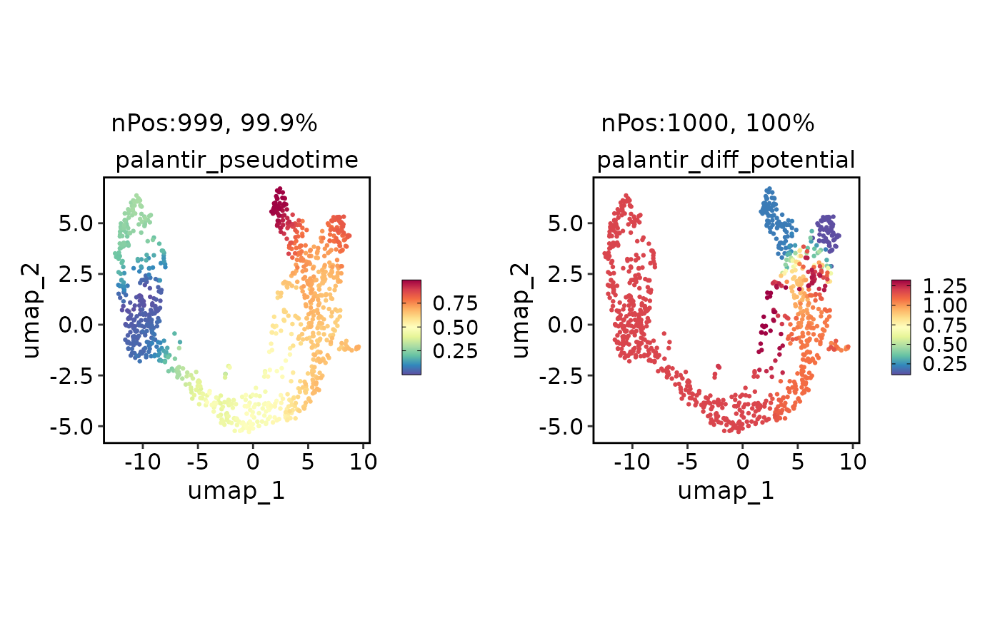
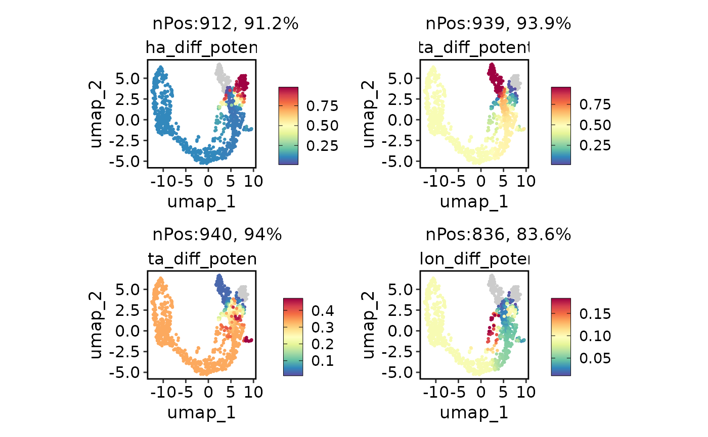

Run Palantir analysis
Usage
RunPalantir(
srt = NULL,
assay_X = "RNA",
slot_X = "counts",
assay_layers = c("spliced", "unspliced"),
slot_layers = "counts",
adata = NULL,
h5ad = NULL,
group_by = NULL,
linear_reduction = NULL,
nonlinear_reduction = NULL,
basis = NULL,
n_pcs = 30,
n_neighbors = 30,
dm_n_components = 10,
dm_alpha = 0,
dm_n_eigs = NULL,
early_group = NULL,
terminal_groups = NULL,
early_cell = NULL,
terminal_cells = NULL,
num_waypoints = 1200,
scale_components = TRUE,
use_early_cell_as_start = TRUE,
adjust_early_cell = FALSE,
adjust_terminal_cells = FALSE,
max_iterations = 25,
n_jobs = 8,
point_size = 20,
show_plot = TRUE,
dpi = 300,
save = FALSE,
dirpath = "./",
fileprefix = "",
return_seurat = !is.null(srt)
)Arguments
- srt
A
Seuratobject.- adata
An
anndataobject. Can be created throughsrt_to_adata- h5ad
h5ad file path.
- group_by
group_by.
- linear_reduction
linear_reduction.
- nonlinear_reduction
nonlinear_reduction.
- basis
basis.
- n_pcs
n_pcs.
- n_neighbors
n_neighbors.
- n_jobs
n_jobs.
- point_size
point_size.
- dpi
dpi.
- save
save.
- dirpath
dirpath.
- fileprefix
fileprefix.
- return_seurat
Examples
data("pancreas_sub")
pancreas_sub <- RunPalantir(
srt = pancreas_sub, group_by = "SubCellType", linear_reduction = "PCA", nonlinear_reduction = "UMAP",
early_group = "Ductal", use_early_cell_as_start = TRUE,
terminal_groups = c("Alpha", "Beta", "Delta", "Epsilon")
)
#> 'misc' slot is not converted.
#> 'tools' slot is not converted.
head(pancreas_sub[[]])
#> orig.ident nCount_RNA nFeature_RNA S_score G2M_score nCount_spliced nFeature_spliced
#> CAGCCGAAGCGATATA SeuratProject 10653 3295 0.33188155 0.54532743 10653 3295
#> AGTGTCATCGCCGTGA SeuratProject 4596 2053 -0.07156909 -0.08865353 4596 2053
#> GATGAAAAGTTGTAGA SeuratProject 14091 3864 0.08940628 0.77610326 14091 3864
#> CACAGTACATCCGTGG SeuratProject 5484 2510 -0.25927997 -0.25941831 5484 2510
#> CGGAGCTCATTGGGCC SeuratProject 7357 2674 -0.11764368 0.46237856 7357 2674
#> AGAGCTTGTGTGACCC SeuratProject 6498 2516 -0.11406432 -0.17830831 6498 2516
#> nCount_unspliced nFeature_unspliced CellType SubCellType Phase palantir_pseudotime
#> CAGCCGAAGCGATATA 1587 1063 Ductal Ductal G2M 0.25910808
#> AGTGTCATCGCCGTGA 1199 803 Pre-endocrine Pre-endocrine G1 0.49968980
#> GATGAAAAGTTGTAGA 2166 1379 Ngn3 low EP Ngn3 low EP G2M 0.29036675
#> CACAGTACATCCGTGG 1339 859 Endocrine Beta G1 0.69014100
#> CGGAGCTCATTGGGCC 976 745 Ductal Ductal G2M 0.11107706
#> AGAGCTTGTGTGACCC 822 591 Ductal Ductal G1 0.03843483
#> palantir_diff_potential Delta_diff_potential Epsilon_diff_potential Alpha_diff_potential
#> CAGCCGAAGCGATATA 1.1828661 0.3363345 0.09180837 0.10830487
#> AGTGTCATCGCCGTGA 1.1772545 0.3362934 0.08943487 0.10713285
#> GATGAAAAGTTGTAGA 1.1828661 0.3363345 0.09180837 0.10830487
#> CACAGTACATCCGTGG 0.9354271 0.2798339 0.02801623 0.06885154
#> CGGAGCTCATTGGGCC 1.1828661 0.3363345 0.09180837 0.10830487
#> AGAGCTTGTGTGACCC 1.1828661 0.3363345 0.09180837 0.10830487
#> Beta_diff_potential
#> CAGCCGAAGCGATATA 0.4635523
#> AGTGTCATCGCCGTGA 0.4671389
#> GATGAAAAGTTGTAGA 0.4635523
#> CACAGTACATCCGTGG 0.6232984
#> CGGAGCTCATTGGGCC 0.4635523
#> AGAGCTTGTGTGACCC 0.4635523
FeatureDimPlot(pancreas_sub, c("palantir_pseudotime", "palantir_diff_potential"))

FeatureDimPlot(pancreas_sub, paste0(c("Alpha", "Beta", "Delta", "Epsilon"), "_diff_potential"))
